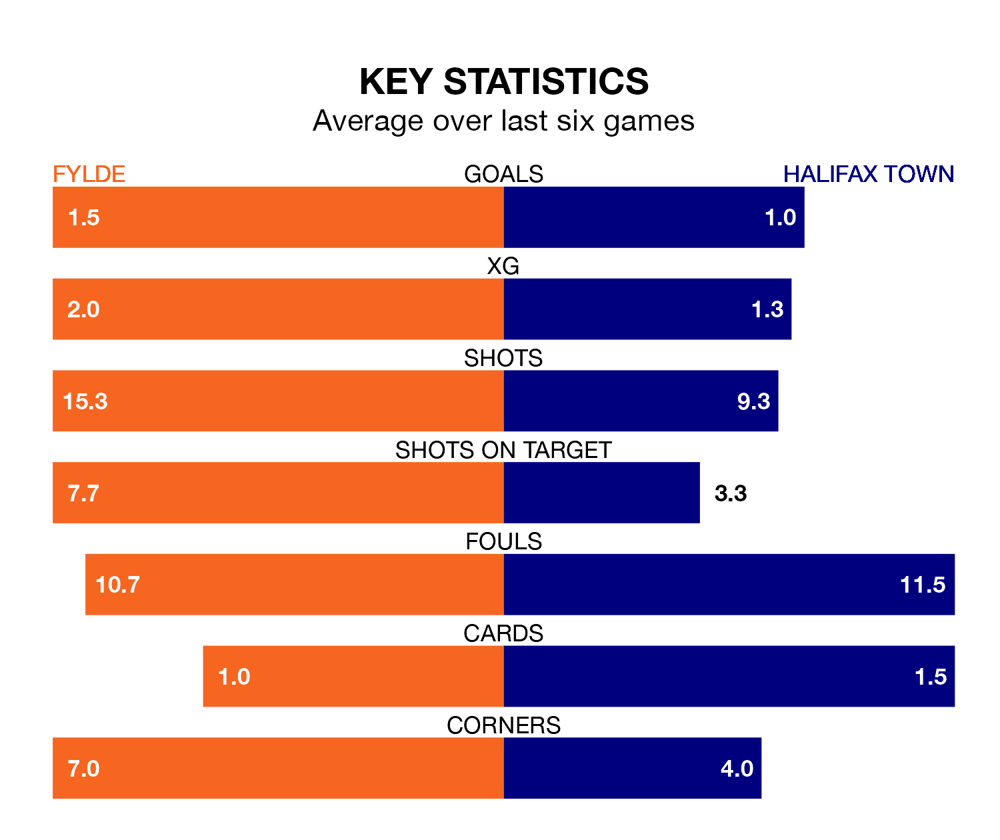

Struggling Fylde face Halifax Town at the Mill Farm Stadium on Tuesday looking to build on a win in their last league outing.
After securing all three points with a 2-1 victory over Hartlepool United on January 9, the Coasters sit 22nd in National League.
They travel to play a Halifax side 10th in the standings, who lost in their last match, 3-0 against Southend United, on January 6.
In the last 10 years, Fylde and Halifax have played each other on eight occasions. They won three each, and they drew twice.
On average, the Coasters scored 1.2 goals and the Shaymen 1.5 in those matches.
Their last meeting was on November 21, when they played out a 2-2 draw.
With 30 goals in 27 games so far this season, Halifax are scoring at below the league average rate with 1.1 goals per game. But they are conceding fewer than average too, letting in 27 goals at a rate of 1.0 per game.
Fylde are also below average scorers, with 1.4 goals per game, compared to a league average of 1.5. They have conceded 1.9 goals per game.
The Coasters are in mixed form in National League, with two wins and two draws from their last six games.
And also with two wins and two draws over that period, Town's form is identical – they have both taken eight points from 18.
Updated: 09:18 (UTC), 23/01/24